Практичний досвід · журнал «ДентАрт» 2017 №3
Пряме нанесення Biodentine™ під непрямі керамічні реставрації
THE DIRECT APPLICATION OF BIODENTINE™ UNDER INDIRECT CERAMIC RESTORATION
Відновлення відсутніх горбів бічних зубів – непросте завдання, тому що при великій втраті тканин потрібно надійно захистити пульпу. Стандартними засобами її захисту є лайнери, лаки і базові матеріали, які вносять під реставрацію. Матеріал для захисту пульпи повинен компенсувати втрату дентину, стимулювати регенерацію тканини і викликати відповідну реакцію пульпи.
У поданому клінічному випадку продемонстровано, що для цієї мети можна з успіхом застосовувати Biodentinе™, який вирізняється гарною біосумісністю, твердне протягом лічених хвилин і чудово підходить для внесення в каріозні порожнини і покриття пульпи зубів у дорослих пацієнтів.
Вступ
Відновлення відсутніх горбів бічних зубів завжди було складним завданням. При великій втраті тканин є ймовірність відколів композитних пломб і накладок. У ситуаціях, коли пряма реставрація неможлива, але консервативне лікування все ж потрібне (Walmsley AD, 2007), слід врахувати стан пульпо-дентинного комплексу, щоб видалити весь некротичний дентин і зуміти відрізнити інфікований дентин від неінфікованого демінералізованого (Tolidis і Boutsiouki, 2012), оскільки межі порожнини іноді проходять у безпосередній близькості від пульпи. Ситуація набагато складніша, якщо товщина дентину, що залишився, становить менше 1,5 мм, оскільки при цьому слід захистити пульпу зуба. Крім того, що треба обрати правильний матеріал і відповідну техніку, дуже важливо, щоб на межі реставрації не виникло мікропідтікань. Це в подальшому буде сприяти відновленню запаленої пульпи.
Крім консервативного препарування і чудових естетичних показників, перевагами керамічних накладок є, наприклад, герметизація пульпо-дентинного комплексу, вища міцність з'єднання і менша чутливість після лікування (Walmsley AD, 2007). Крім того, у разі встановлення керамічної реставрації мікропідтікання по краях будуть мінімальними, тому що тонкий шар композитного цементу має знижену усадку при полімеризації і мінімальні зміни об'єму при тепловій дії.
Стандартними засобами захисту пульпи є лайнери, лаки і базові матеріали, які вносять під реставрацію. Вони дозволяють захистити пульпу від зовнішнього впливу і сприяють її відновленню. В ідеалі матеріал для захисту пульпи повинен компенсувати втрату дентину і в той же час стимулювати регенерацію тканини та викликати відповідну реакцію пульпи. Базові матеріали розроблені лише для компенсації втрати більшої кількості тканини, коли ж потрібен біоактивний матеріал, як прокладку часто використовують гідроксид кальцію, після чого рекомендоване внесення базового матеріалу, наприклад, склоіономерного цементу (Walmsley AD, 2007).
Коли стоматологи стали використовувати мінеральний триоксид агрегат (МТА), з'явилося більше можливостей для лікування пульпи. Біосумісність, регенерація тканини і стимулювання формування дентинового містка вже вивчені, проте робочі характеристики кальцієвих цементів, як і раніше, вивчаються, тому що рівень вологи, техніка конденсації, оптимальний тиск і час затвердіння є важливими факторами, від яких залежить клінічний результат (Rao і співавт., 2009). Через те, що МТА твердне близько 2-4 годин, часто пацієнт повинен прийти вдруге, щоб встановити остаточну реставрацію.
У сучасній літературі відсутня будь-яка інформація про те, що непряму реставрацію можна встановити поверх МТА, тобто без використання проміжного стандартного базового матеріалу. Biodentine™, аналогічний трикальцієвий силікат, розробили як замінник дентину в глибоких порожнинах. Його механічні властивості аналогічні властивостям дентину. Він біологічно сумісний, активується при контакті з дентином і дуже добре підходить для внесення в каріозні порожнини і покриття пульпи зуба дорослого пацієнта (наукова документація щодо Biodentine™). Матеріал твердне протягом 12 хвилин. Його можна використовувати для встановлення довговічної тимчасової реставрації.
Оскільки механічні властивості Biodentine™ аналогічні властивостям дентину, його можна застосовувати під непрямими реставраціями як базовий матеріал, дотримуючись при цьому первинної інструкції виробника (Shala і співавт., 2012). Але у процедуру застосування матеріалу недавно було внесено зміни. Спочатку передбачалося, що препарувати поверхню Biodentine™ для подальшого встановлення прямої чи непрямої реставрації можна не менше ніж через 48 годин. Якщо матеріал не повністю затвердів, м'яку поверхню не так просто буде відпрепарувати, на матрицю може вплинути кислота (у процесі протравлювання), а механічні характеристики, ймовірно, погіршаться. Недавні зміни, внесені в інструкцію виробника щодо використання матеріалу, передбачають, що Biodentine™ можна без ризику препарувати відразу після затвердіння, що триває 12 хвилин.
Проаналізувавши чудові показники Biodentine™ in vitro у порівнянні зі стандартними базовими матеріалами (склоіономерними цементами і текучими композитами) під прямими композитними реставраціями при використанні самопротравлюючої адгезивної системи, можна стверджувати, що пряма реставрація безпечна для цементу (Tolidis і співавт., 2013) (фото 1) і що його механічні характеристики аналогічні характеристикам стандартних базових матеріалів (Yapp і співавт., 2012). Також можна припустити, що тривалість процесу усадки Biodentine™ дозволяє компенсувати стрес під час полімеризації, який виникає під впливом покриваючого композиту. Тому по краях зберігається ідеальна герметизація, а мікропідтікання зведені до мінімуму (Tolidis і співавт., 2013) (фото 1). У цьому випадку використовували комбінацію двох інноваційних процедур (Shala і співавт., 2012; Tolidis і співавт., 2013; Yapp і співавт., 2012).
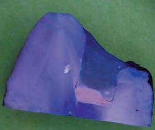
Клінічний випадок
Пацієнтка 27 років звернулася в стоматологічну клініку для планового обстеження. При об'єктивному огляді відзначається гарна гігієна ротової порожнини, кілька невеликих пломб бічних зубів у задовільному стані. Однак у першому верхньому молярі композитна пломба класу II за Блеком мала незадовільну анатомію і ознаки вторинного карієсу у пришийковій зоні (фото 2).
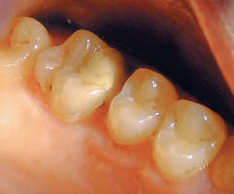
Для детальнішого аналізу ситуації, а також для перевірки контактних поверхонь усіх бічних зубів на наявність карієсу в початковій стадії було зроблено прикусні прицільні рентгенограми, включаючи згаданий зуб. На рентгенограмі виявлено вторинний карієс під композитною пломбою, також краї пломб мали неприйнятний вигляд. Крім того, за рентгенограмою було встановлено наявність остеолізису гребеня альвеолярної кістки між першим моляром і другим премоляром на початковій стадії, оскільки неправильна точка контакту провокує скупчення нальоту і перешкоджає самоочищенню (фото 3). Було вирішено замінити пломбу. Результат тесту на вітальність зуба (холодовий тест) був позитивним.
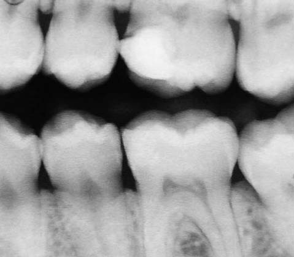
Після введення місцевого анестетика композит видалено високошвидкісним бором циліндричної форми з обов'язковим водяним охолодженням. Після видалення пломби наявність вторинного карієсу підтвердилася. Під час видалення композиту мезіально-піднебінний горб зламався через те, що під ним була велика каріозна порожнина (фото 4). Каріозні тканини були вилучені екскаватором і низькошвидкісним бором круглої форми. У мезіальній порожнині каріозна порожнина продовжувалася під яснами, тому, щоб збільшити поле огляду, ясна вирізали електрокоагулятором. Після обробки порожнини краї емалі без підтримки дентину довелося видалити. Таким чином, глибина і площа видалених тканин перевищили заплановані спочатку параметри.
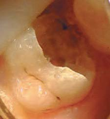
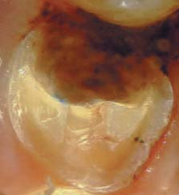
Фото 4. Фото 5.
З огляду на масштаб порожнини під яснами у мезіальнній ділянці та кількість видалених зубних тканин, включаючи горби, було вирішено відновити зуб за допомогою накладки, тобто компенсувати втрачений дентин і захистити вітальну пульпу відповідним матеріалом. Пацієнтку турбував естетичний вигляд і ймовірний термін служби реставрації. Оскільки вона не страждала бруксизмом, вирішено використати керамічну накладку. Для компенсації дентину і захисту пульпи під керамічною реставрацією вирішили використати Biodentine™. Краї пломби відпрепаровані високошвидкісним бором конусної форми із заокругленими краями, а оклюзійна поверхня дистальних горбів, що залишилися, редукована, щоб отримати додаткові ретенційні 2 мм для керамічної конструкції. Також, щоб пломба була механічно стабільною, зроблено мезіо-дистальний ретенційний пропил, краї заокруглені, щоб запобігти впливу точкового навантаження на пломбу і зуб. Проксимальні стінки відпрепаровано алмазним бором конічної форми під загальним кутом 10-12°, тобто кожну стінку – під кутом 6°. Ці маніпуляції виконані особливо акуратно, щоб не допустити утворення піднутрень (фото 5).
Стандартною процедурою було б повністю закрити відпрепаровану порожнину матеріалом Biodentine™ і почекати не менше 48 годин. У такому випадку Biodentine™ компенсував би втрату дентину і одночасно діяв би як тимчасова пломба. І тільки під час наступного візиту, в разі дотримання стандартної процедури, можна було б продовжити маніпуляції.
З урахуванням інформації, отриманої завдяки дослідженням (Yapp і співавт., 2012; Tolidis і співавт., 2013), було вирішено перейти до подальших реставраційних маніпуляцій відразу після внесення і затвердіння Biodentine™.
Biodentine™ внесли відразу після формування порожнини. У найглибшій частині порожнини з мезіального боку Biodentine™ нанесли шаром 2 мм, тобто так, щоб покрити всі піднутрення з боку пульпи. Матеріал сконденсували, захистили від впливу вологи і залишили тверднути на 12 хвилин – у відповідності з інструкцією виробника. Потім було виконано фінішну обробку поверхні Biodentine™, для якої використовували низькошвидкісний карбідний бор.
Покриті цементом дентинні стінки порожнини, відпрепарованої під накладку, були гранично обережно відпрепаровані високошвидкісним дрібнозернистим алмазним бором (фото 6). Якщо лікар вирішить продовжити реставрування зуба відразу після того, як Biodentine™ затвердне, у техніці прямої чи непрямої реставрації, то в такому випадку безпечніше препарувати Biodentine™ низькошвидкісними борами – щоб уникнути видалення всього цементу з порожнини (Tolidis і співавт., 2013). У мезіальну ділянку ясенної борозенки, тобто туди, де порожнина була відпрепарована під яснами, ввели ретракційну нитку. Для отримання відбитка використовували вінілполісилоксановий матеріал (фото 7). Для керамічної реставрації перевагу надали відтінку А2, який відповідає кольору сусідніх зубів і зубів-антагоністів пацієнтки. Конструкція була покрита тимчасовим світлотверднучим матеріалом (фото 8), який можна легко видалити зондом у день встановлення пломби.
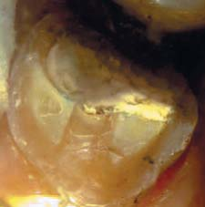
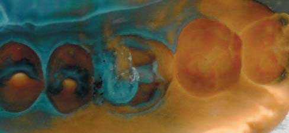
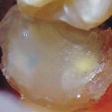
Фото 6. Фото 7. Фото 8.
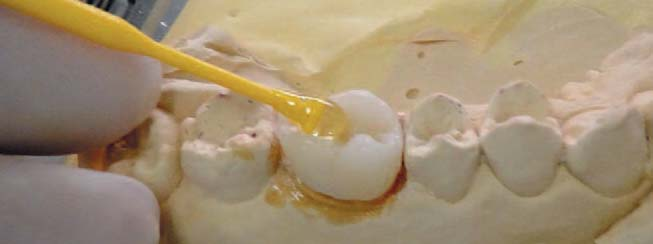
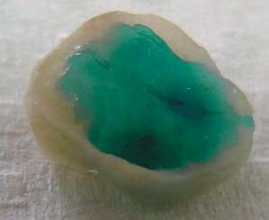
Фото 9. Фото 10.
Під час другого візиту пацієнтці приміряли керамічну накладку, а щоб не допустити втрати або пошкодження реставраційних матеріалів, використовували спеціальні тримачі (фото 9).
Керамічна реставраційна конструкція була покрита лаком. А перед фіксацією внутрішня поверхня підготована 37% розчином ортофосфорної кислоти, який нанесли на 30 секунд (фото 10), після чого, дотримуючись техніки фіксації, нанесли силановий праймер. Самопротравлюючий адгезив нанесли на зубні тканини, не покриті матеріалом Biodentine™, а реставраційну конструкцію зафіксували композитним цементом подвійного затвердіння, щоб посилити ретенцію (фото 11). Зайвий цемент видалили зондом, а точки контакту перевірили за допомогою зубної нитки. Реставрація була заполімеризована протягом 40 секунд з кожного боку, оклюзію перевірили оклюзійним папером і скоригували в ділянці максимального контакту і при рухах нижньої щелепи. Видимі межі також фінірували дрібнозернистими алмазними і силіконовими насадками конічної форми.
Пацієнтці повідомили про те, яким чином слід підтримувати гігієну ротової порожнини, і порекомендували не кусати тверді предмети і продукти тією ділянкою зубів, де встановлено реставрацію. Чутливість після лікування, як і інші симптоми, не виявлялися. Пацієнтка проходила спостереження півроку (фото 12, 13, 14). Дані внутріротового обстеження, рентгенограми і перевірка вітальності пульпи підтвердили, що матеріал було обрано правильно і процедуру виконано належним чином. Якщо порівняти дві рентгенограми, добре видно, що формується репаративний дентин (фото 3 і 14).
Нарешті, що не менш важливо, реставрацію в мезіальній ділянці та краї зубної тканини візуально вивчили за допомогою фотографії з великим збільшенням (фото 13), а також за допомогою зонда. Так ми переконалися у тому, що просвіт у цій зоні, який можна помітити на рентгенограмі, не виявляється клінічно.
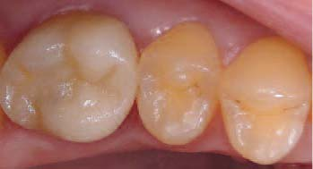
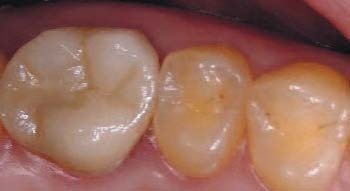
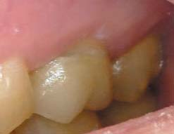
Фото 11. Фото 12. Фото 13.
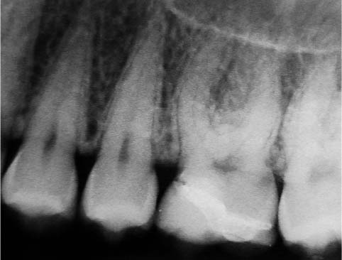
Висновки
Завдяки інноваційному підходу вдалося скоротити кількість візитів і виконати повноцінну реабілітацію першого верхнього моляра, встановивши довговічну естетичну непряму реставрацію.
Оскільки дослідним шляхом було доведено, що нанесення реставраційного матеріалу безпосередньо на Biodentine™ є ефективною процедурою, яка займає небагато часу, цей аналіз випадку з практики розвиває уявлення про такий варіант лікування з використанням керамічних реставрацій. При цьому варто підкреслити, що в разі прямої реставрації з Biodentine™ потрібно працювати дуже обережно.
Статтю переклали і підготували в компанії CRYSTAL Pharma
Література
- Shala AJ, Simon J, Darnelll L. Biodentinе™ as a base under CEREC restorations. Poster Session AADR 2012, Tampa, Florida, USA.
- Tolidis K, Boutsiouki C. Decay diagnosis camera: Is it a valid alternative? The International Journal of Microdentistry 2012;3(1): (ahead of publication).
- Tolidis K, Boutsiouki C, Gerasimou P. Comparative evaluation of microleakage in direct restorations with Ca3SiO4 bioactive material (Biodentinе™) under composite resin. Clin Oral Invest 2013;17(3):1083.
- Walmsley AD, Walsh TF, Lumley PJ, Trevor Burke FJ, Shortall AC, Hayes-Hall R, Pretty IA. Restorative Dentistry, 2nd Edition, 2007, Churchill Livingstone, Elsevier.
- Yapp R, Strassler H, Bracho-Trochonis C, Richard G, Powers J. Compressive deflection of composite layered on Biodentinе™ and two bases. Poster Session AADR 2012, Tampa, Florida, USA.